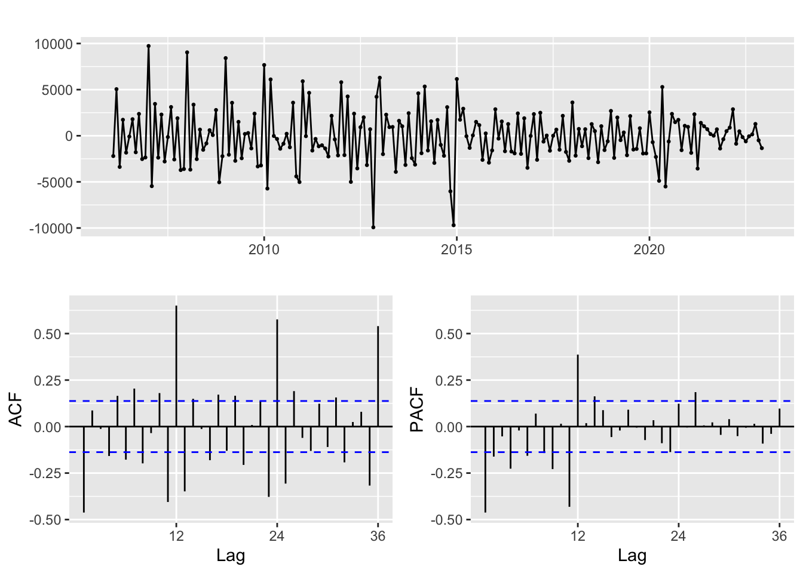
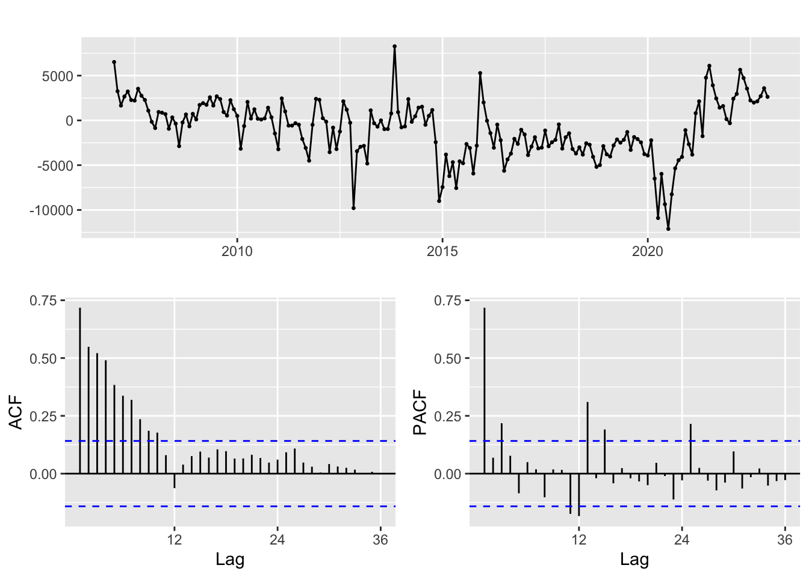
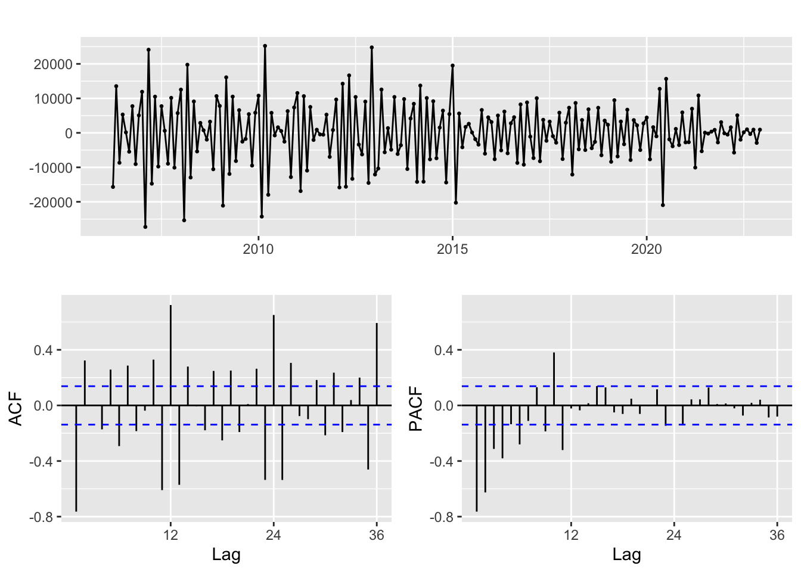
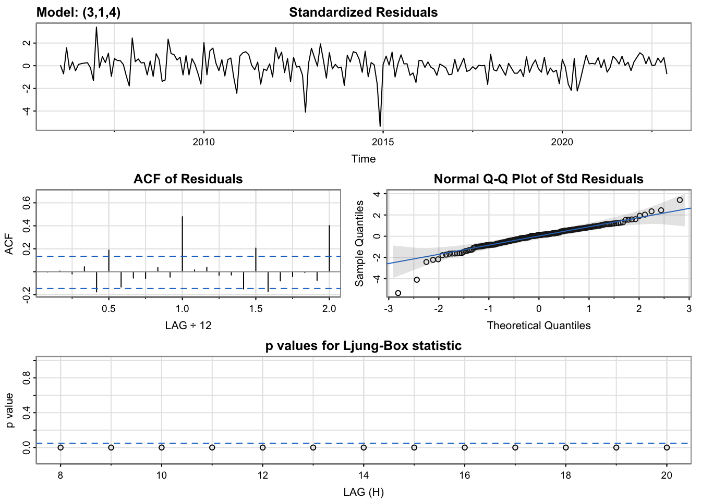
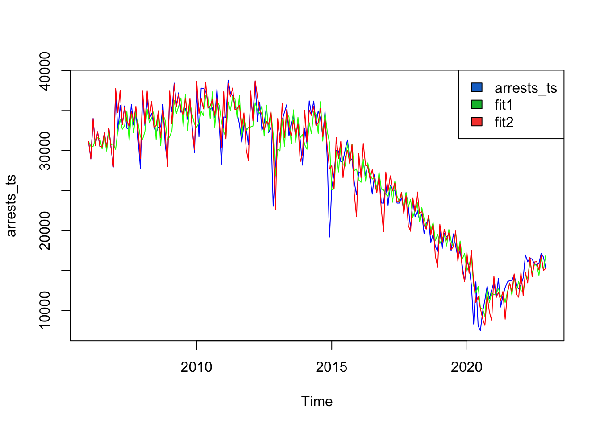
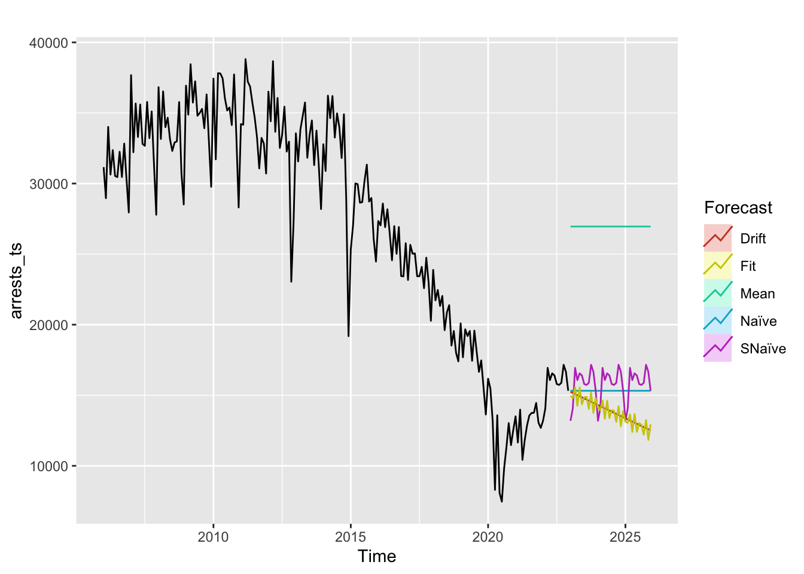
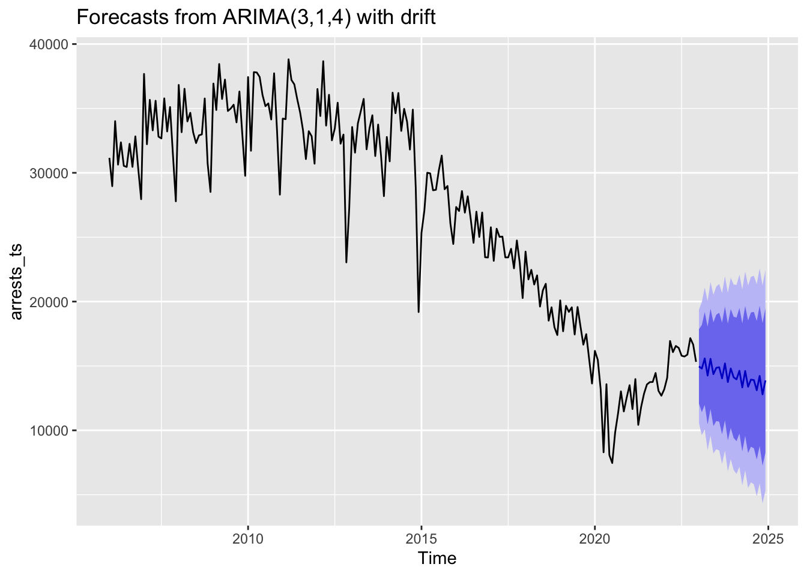
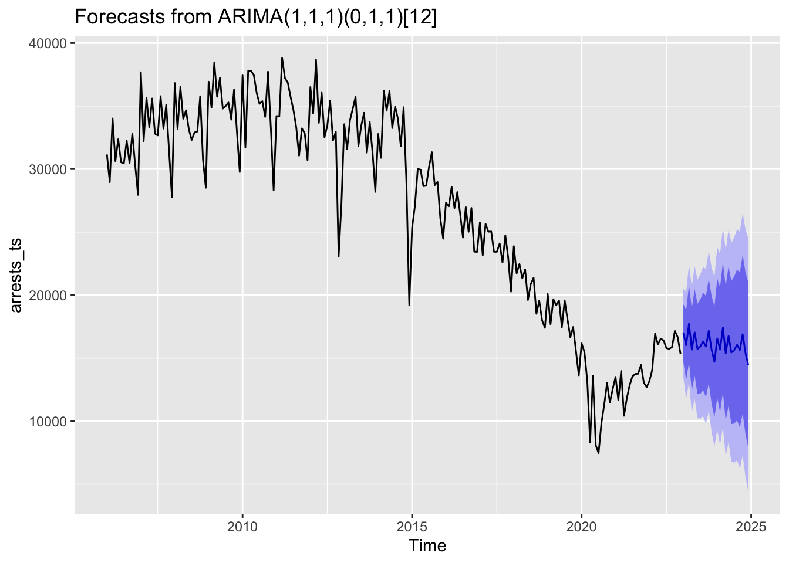

ARMA/ARIMA/SARIMA Models
Fitting NYC Arrests Series
First Difference
Second Difference

Third Difference

All three difference plots look similar in their stationarity, so we will check \(d=1,2,3\). From the ACF and PACF plots, we determine that we will check \(q=1,2,4,5\) and \(p=1,2,3,4\).
| p | d | q | AIC | BIC | AICc |
|---|---|---|---|---|---|
| 1 | 1 | 1 | 3766.511 | 3776.451 | 3766.632 |
| 1 | 2 | 1 | 3765.516 | 3775.440 | 3765.637 |
| 1 | 3 | 1 | 3883.211 | 3893.121 | 3883.333 |
| 1 | 1 | 2 | 3764.168 | 3777.420 | 3764.370 |
| 1 | 2 | 2 | 3756.268 | 3769.501 | 3756.471 |
| 1 | 3 | 2 | 3761.431 | 3774.644 | 3761.635 |
| 1 | 1 | 4 | 3764.044 | 3783.924 | 3764.473 |
| 1 | 2 | 4 | 3755.507 | 3775.357 | 3755.938 |
| 1 | 3 | 4 | 3752.797 | 3772.617 | 3753.230 |
| 1 | 1 | 5 | 3765.763 | 3788.956 | 3766.338 |
| 1 | 2 | 5 | 3752.597 | 3775.754 | 3753.174 |
| 2 | 1 | 1 | 3764.254 | 3777.506 | 3764.456 |
| 2 | 2 | 1 | 3762.597 | 3775.831 | 3762.801 |
| 2 | 3 | 1 | 3834.959 | 3848.173 | 3835.163 |
| 2 | 1 | 2 | 3766.236 | 3782.802 | 3766.541 |
| 2 | 2 | 2 | 3762.872 | 3779.413 | 3763.178 |
| 2 | 3 | 2 | 3758.903 | 3775.420 | 3759.211 |
| 2 | 1 | 4 | 3765.657 | 3788.849 | 3766.231 |
| 2 | 2 | 4 | 3752.816 | 3775.974 | 3753.393 |
| 2 | 1 | 5 | 3725.809 | 3752.314 | 3726.551 |
| 3 | 1 | 1 | 3766.209 | 3782.775 | 3766.513 |
| 3 | 2 | 1 | 3764.153 | 3780.694 | 3764.459 |
| 3 | 3 | 1 | 3828.259 | 3844.775 | 3828.566 |
| 3 | 1 | 2 | 3765.955 | 3785.834 | 3766.384 |
| 3 | 2 | 2 | 3753.919 | 3773.769 | 3754.350 |
| 3 | 3 | 2 | 3760.547 | 3780.367 | 3760.980 |
| 3 | 1 | 4 | 3725.629 | 3752.135 | 3726.371 |
| 4 | 1 | 1 | 3764.753 | 3784.632 | 3765.182 |
| 4 | 2 | 1 | 3756.035 | 3775.885 | 3756.466 |
| 4 | 3 | 1 | 3805.134 | 3824.954 | 3805.567 |
| 4 | 1 | 2 | 3763.442 | 3786.635 | 3764.017 |
| 4 | 2 | 2 | 3757.657 | 3780.815 | 3758.235 |
Model Selection and Diagnostics
Minimum AIC
| p | d | q | AIC | BIC | AICc | |
|---|---|---|---|---|---|---|
| 27 | 3 | 1 | 4 | 3725.629 | 3752.135 | 3726.371 |
Minimum BIC
| p | d | q | AIC | BIC | AICc | |
|---|---|---|---|---|---|---|
| 27 | 3 | 1 | 4 | 3725.629 | 3752.135 | 3726.371 |
Minimum AICc
| p | d | q | AIC | BIC | AICc | |
|---|---|---|---|---|---|---|
| 27 | 3 | 1 | 4 | 3725.629 | 3752.135 | 3726.371 |
It is clear that the best model is one with parameters \(p=3, d=1, q=4\). We now check the model diagnostics.

Call:
arima(x = xdata, order = c(p, d, q), seasonal = list(order = c(P, D, Q), period = S),
xreg = constant, transform.pars = trans, fixed = fixed, optim.control = list(trace = trc,
REPORT = 1, reltol = tol))
Coefficients:
ar1 ar2 ar3 ma1 ma2 ma3 ma4 constant
-1.2801 -0.2081 0.4542 0.8945 -0.4709 -0.7972 0.0207 -79.3632
s.e. 0.2006 0.3481 0.2000 0.2089 0.2354 0.0754 0.1467 50.3485
sigma^2 estimated as 4866953: log likelihood = -1853.72, aic = 3725.45
$degrees_of_freedom
[1] 195
$ttable
Estimate SE t.value p.value
ar1 -1.2801 0.2006 -6.3823 0.0000
ar2 -0.2081 0.3481 -0.5977 0.5507
ar3 0.4542 0.2000 2.2715 0.0242
ma1 0.8945 0.2089 4.2829 0.0000
ma2 -0.4709 0.2354 -2.0005 0.0468
ma3 -0.7972 0.0754 -10.5709 0.0000
ma4 0.0207 0.1467 0.1411 0.8879
constant -79.3632 50.3485 -1.5763 0.1166
$AIC
[1] 18.35196
$AICc
[1] 18.35561
$BIC
[1] 18.49885There is some concern about the correlation between residuals according to the p values for the Ljung-Box statistic, but we will continue evaluating the model regardless.
Auto-Arima
Series: arrests_ts
ARIMA(1,1,1)(0,1,1)[12]
Coefficients:
ar1 ma1 sma1
0.4337 -0.7444 -0.6934
s.e. 0.1367 0.1018 0.0554
sigma^2 = 3187995: log likelihood = -1703.68
AIC=3415.36 AICc=3415.57 BIC=3428.37The information criteria are all better that the previously used model of ARIMA(3, 1, 4). This model is absolutely worth considering moving forward.
Fitted vs. Actual

Both fitted models look similar to the actual time series.
Forecasting
fit1

Both models appear to be better than SNaïve as they do a better job of capturing the trend.
SNaïve model error measurements:
ME RMSE MAE MPE MAPE MASE ACF1
Training set -948.75 3352.033 2586.25 -6.206225 13.38735 1 0.717891Fitted model error measurements:
Series: arrests_ts
ARIMA(3,1,4) with drift
Coefficients:
ar1 ar2 ar3 ma1 ma2 ma3 ma4 drift
-1.2801 -0.2081 0.4542 0.8945 -0.4709 -0.7972 0.0207 -79.3632
s.e. 0.2006 0.3481 0.2000 0.2089 0.2354 0.0754 0.1467 50.3485
sigma^2 = 5066628: log likelihood = -1853.72
AIC=3725.45 AICc=3726.38 BIC=3755.27
Training set error measures:
ME RMSE MAE MPE MAPE MASE
Training set 5.597487 2200.704 1595.247 -0.9085461 6.803609 0.6168187
ACF1
Training set -0.002591217Series: arrests_ts
ARIMA(1,1,1)(0,1,1)[12]
Coefficients:
ar1 ma1 sma1
0.4337 -0.7444 -0.6934
s.e. 0.1367 0.1018 0.0554
sigma^2 = 3187995: log likelihood = -1703.68
AIC=3415.36 AICc=3415.57 BIC=3428.37
Training set error measures:
ME RMSE MAE MPE MAPE MASE ACF1
Training set -121.183 1714.047 1202.141 -0.5315764 5.725607 0.46482 0.02141618The model error measurements for both models are all much lower than the SNaïve benchmark method, so both models can work.

